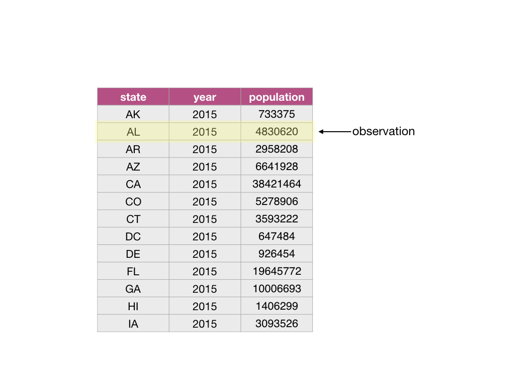
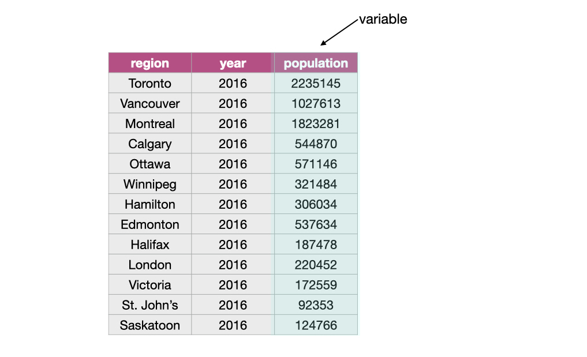
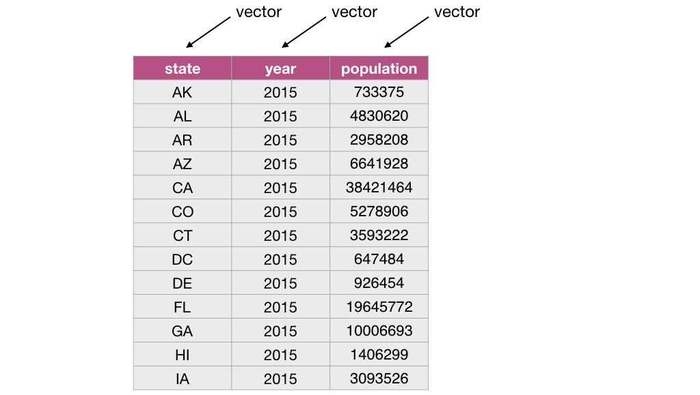
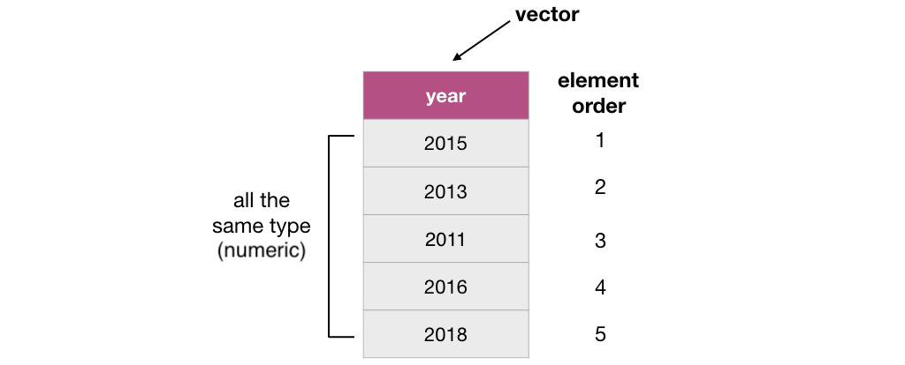
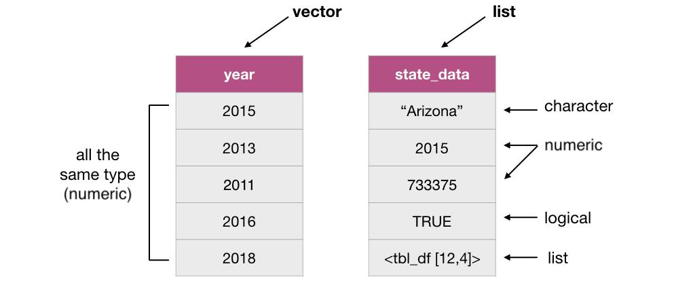
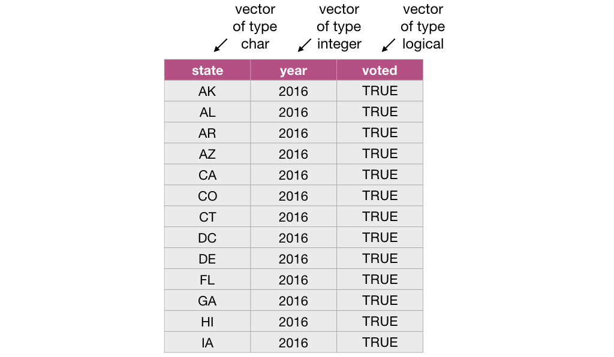
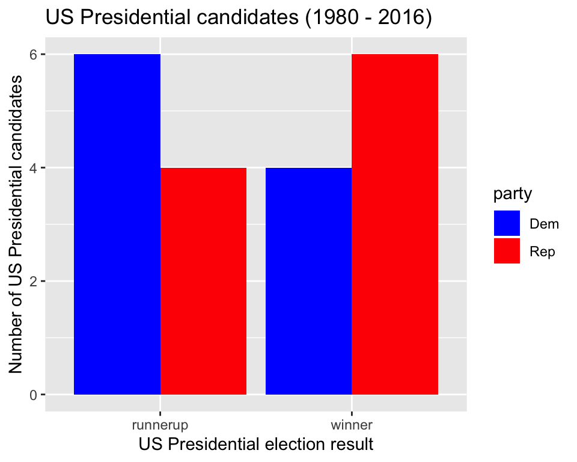

Chapter 3 Cleaning and wrangling data
3.1 Overview
This chapter will be centered around tools for cleaning and wrangling data that move data from its raw format into a format that is suitable for data analysis. They will be presented in the context of a real world data science application, providing more practice working through a whole case study.
3.2 Chapter learning objectives
By the end of the chapter, students will be able to:
- define the term “tidy data”
- discuss the advantages and disadvantages from storing data in a tidy data format
- recall and use the following tidyverse functions and operators for their intended data wrangling tasks:
selectfilter%>%mapmutatesummarizegroup_bygatherseparate%in%
3.3 Vectors and Data frames
At this point, we know how to load data into R from various file formats. Once loaded into R, all the tools we have learned about for reading data into R represent the data as a data frame. So now we will spend some time learning more about data frames in R, such that we have a better understanding of how we can use and manipulate these objects.
3.3.1 What is a data frame?
Let’s first start by defining exactly what a data frame is. From a data perspective, it is a rectangle where the rows are the observations:

and the columns are the variables:

From a computer programming perspective, in R, a data frame is a special subtype of a list object whose elements (columns) are vectors.
For example, the data frame below has 3 elements that are vectors whose names are state, year and population.

3.3.2 What is a vector?
In R, vectors are objects that can contain 1 or more elements. The vector elements are ordered, and they must all be of the same type. Common
example types of vectors are character (e.g., letter or words), numeric (whole numbers and fractions) and logical (e.g., TRUE or FALSE). In
the vector shown below, the elements are of numeric type:

3.3.3 How are vectors different from a list?
Lists are also objects in R that have multiple elements. Vectors and lists differ by the requirement of element type consistency. All elements within a single vector must be of the same type (e.g., all elements are numbers), whereas elements within a single list can be of different types (e.g., characters, numbers, logicals and even other lists can be elements in the same list).

3.3.4 What does this have to do with data frames?
As mentioned earlier, a data frame is really a special type of list where the elements can only be vectors. Representing data with such an object enables us to easily work with our data in a rectangular/spreadsheet like manner, and to have columns/vectors of different characteristics associated/linked in one object. This is similar to a table in a spreadsheet or a database.

3.4 Tidy Data
There are many ways spreadsheet-like dataset can be organized. In this chapter we are going to focus on the tidy data format of organization, and how to make your raw (and likely messy) data tidy. This is because a variety of tools we would like to be able to use in R are designed to work most effectively (and efficiently) with tidy data.
3.4.1 What is tidy data?
Tidy data satisfy the following three criteria:
- each row is a single observation,
- each column is a single variable, and
- each value is a single cell (i.e., its row and column position in the data frame is not shared with another value)
 image source: R for Data Science by Garrett Grolemund & Hadley Wickham
image source: R for Data Science by Garrett Grolemund & Hadley Wickham
Definitions to know:
observation - all of the quantities or a qualities we collect from a given entity/object
variable - any characteristic, number, or quantity that can be measured or collected
value - a single collected quantity or a quality from a given entity/object
3.4.2 Why is tidy data important in R?
First, one of the most popular plotting toolsets in R, the ggplot2 library, expects the data to be in a tidy format. Second, most statistical analysis functions expect data in tidy format. Given that both of these tasks are central in virtually any data analysis
project, it is well worth spending the time to get your data into a tidy format up front. Luckily there are many well designed tidyverse data cleaning/wrangling tools to help you easily tidy your data. Let’s explore them now!
3.4.3 Going from wide to long (or tidy!) using gather
One common thing that often has to be done to get data into a tidy format is to combine columns that are really part the same variable but currently stored in separate columns. To do this we can use the function gather. gather acts to combine columns, and thus makes the data frame narrower.
Data is often stored in a wider, not tidy, format because this format is often more intuitive for human readability and understanding, and humans create data sets. An example of this is shown below:
library(tidyverse)
hist_vote_wide <- read_csv("data/us_vote.csv")
hist_vote_wide <- select(hist_vote_wide, election_year, winner, runnerup)
hist_vote_wide <- tail(hist_vote_wide, 10)
hist_vote_wide## # A tibble: 10 x 3
## election_year winner runnerup
## <dbl> <chr> <chr>
## 1 1980 Ronald Reagan Jimmy Carter
## 2 1984 Ronald Reagan Walter Mondale
## 3 1988 George H. W. Bush Michael Dukakis
## 4 1992 Bill Clinton George H. W. Bush
## 5 1996 Bill Clinton Bob Dole
## 6 2000 George W. Bush Al Gore
## 7 2004 George W. Bush John Kerry
## 8 2008 Barack Obama John McCain
## 9 2012 Barack Obama Mitt Romney
## 10 2016 Donald Trump Hillary ClintonWhat is wrong with our untidy format above? From a data analysis perspective, this format is not ideal because in this format the outcome of the variable “result” (winner or runner up) is stored as column names and not easily accessible for the data analysis functions we will want to apply to our data set. Additionally, the values of the “candidate” variable are spread across two columns and will require some sort of binding or joining to get them into one single column to allow us to do our desired visualization and statistical tasks later on.
To accomplish this data tranformation we will use the tidyverse function gather. To use gather we need to specify:
the dataset
the key: the name of a new column that will be created, whose values will come from the names of the columns that we want to combine (the
resultargument)the value: the name of a new column that will be created, whose values will come from the values of the columns we want to combine (the
valueargument)the names of the columns that we want to combine (we list these after specifying the key and value, and separate the column names with commas)
For the above example, we use gather to combine the winner and runnerup columns into a single column called candidate, and create a column called result that contains the outcome of the election for each candidate:
hist_vote_tidy <- gather(hist_vote_wide,
key = result,
value = candidate,
winner, runnerup)
hist_vote_tidy## # A tibble: 20 x 3
## election_year result candidate
## <dbl> <chr> <chr>
## 1 1980 winner Ronald Reagan
## 2 1984 winner Ronald Reagan
## 3 1988 winner George H. W. Bush
## 4 1992 winner Bill Clinton
## 5 1996 winner Bill Clinton
## 6 2000 winner George W. Bush
## 7 2004 winner George W. Bush
## 8 2008 winner Barack Obama
## 9 2012 winner Barack Obama
## 10 2016 winner Donald Trump
## 11 1980 runnerup Jimmy Carter
## 12 1984 runnerup Walter Mondale
## 13 1988 runnerup Michael Dukakis
## 14 1992 runnerup George H. W. Bush
## 15 1996 runnerup Bob Dole
## 16 2000 runnerup Al Gore
## 17 2004 runnerup John Kerry
## 18 2008 runnerup John McCain
## 19 2012 runnerup Mitt Romney
## 20 2016 runnerup Hillary ClintonSplitting code across lines: In the code above, the call to the
gatherfunction is split across several lines. This is allowed and encouraged when programming in R when your code line gets too long to read clearly. When doing this, it is important to end the line with a comma,so that R knows the function should continue to the next line.*
The data above is now tidy because all 3 criteria for tidy data have now been met:
- All the variables (
candidateandresult) are now their own columns in the data frame. - Each observation, i.e., each candidate’s name, result, and candidacy year, are in a single row.
- Each value is a single cell, i.e., its row, column position in the data frame is not shared with another value.
3.4.4 Using separate to deal with multiple delimiters
As discussed above, data are also not considered tidy when multiple values are stored in the same cell. In addition to the previous untidiness we addressed in the earlier version of this data set, the one we show below is even messier: the winner and runnerup columns contain both the candidate’s name as well as their political party. To make this messy data tidy we’ll have to fix both of these issues.
## # A tibble: 10 x 3
## election_year winner runnerup
## <dbl> <chr> <chr>
## 1 2016 Donald Trump/Rep Hillary Clinton/Dem
## 2 2012 Barack Obama/Dem Mitt Romney/Rep
## 3 2008 Barack Obama/Dem John McCain/Rep
## 4 2004 George W Bush/Rep John Kerry/Dem
## 5 2000 George W Bush/Rep Al Gore/Dem
## 6 1996 Bill Clinton/Dem Bob Dole/Rep
## 7 1992 Bill Clinton/Dem George HW Bush/Rep
## 8 1988 George HW Bush/Rep Michael Dukakis/Dem
## 9 1984 Ronald Reagan/Rep Walter Mondale/Dem
## 10 1980 Ronald Reagan/Rep Jimmy Carter/DemFirst we’ll use gather to create the result and candidate columns, as we did previously:
hist_vote_party_gathered <- gather(hist_vote_party,
key = result,
value = candidate,
winner, runnerup)
hist_vote_party_gathered## # A tibble: 20 x 3
## election_year result candidate
## <dbl> <chr> <chr>
## 1 2016 winner Donald Trump/Rep
## 2 2012 winner Barack Obama/Dem
## 3 2008 winner Barack Obama/Dem
## 4 2004 winner George W Bush/Rep
## 5 2000 winner George W Bush/Rep
## 6 1996 winner Bill Clinton/Dem
## 7 1992 winner Bill Clinton/Dem
## 8 1988 winner George HW Bush/Rep
## 9 1984 winner Ronald Reagan/Rep
## 10 1980 winner Ronald Reagan/Rep
## 11 2016 runnerup Hillary Clinton/Dem
## 12 2012 runnerup Mitt Romney/Rep
## 13 2008 runnerup John McCain/Rep
## 14 2004 runnerup John Kerry/Dem
## 15 2000 runnerup Al Gore/Dem
## 16 1996 runnerup Bob Dole/Rep
## 17 1992 runnerup George HW Bush/Rep
## 18 1988 runnerup Michael Dukakis/Dem
## 19 1984 runnerup Walter Mondale/Dem
## 20 1980 runnerup Jimmy Carter/DemThen we’ll use separate to split the candidate column into two columns, one that
contains only the candidate’s name (“candidate”), and one that contains a short identifier for which
political party the candidate belonged to (“party”):
hist_vote_party_tidy <- separate(hist_vote_party_gathered,
col = candidate,
into = c("candidate", "party"),
sep = "/")
hist_vote_party_tidy## # A tibble: 20 x 4
## election_year result candidate party
## <dbl> <chr> <chr> <chr>
## 1 2016 winner Donald Trump Rep
## 2 2012 winner Barack Obama Dem
## 3 2008 winner Barack Obama Dem
## 4 2004 winner George W Bush Rep
## 5 2000 winner George W Bush Rep
## 6 1996 winner Bill Clinton Dem
## 7 1992 winner Bill Clinton Dem
## 8 1988 winner George HW Bush Rep
## 9 1984 winner Ronald Reagan Rep
## 10 1980 winner Ronald Reagan Rep
## 11 2016 runnerup Hillary Clinton Dem
## 12 2012 runnerup Mitt Romney Rep
## 13 2008 runnerup John McCain Rep
## 14 2004 runnerup John Kerry Dem
## 15 2000 runnerup Al Gore Dem
## 16 1996 runnerup Bob Dole Rep
## 17 1992 runnerup George HW Bush Rep
## 18 1988 runnerup Michael Dukakis Dem
## 19 1984 runnerup Walter Mondale Dem
## 20 1980 runnerup Jimmy Carter DemIs this data now tidy? Well, if we recall the 3 criteria for tidy data:
- each row is a single observation,
- each column is a single variable, and
- each value is a single cell.
We can see that this data now satifies all 3 criteria, making it easier to analyze. For example, we could visualize the number of winning candidates for each party over this time span:
ggplot(hist_vote_party_tidy, aes(x = result, fill = party)) +
geom_bar() +
scale_fill_manual(values=c("blue", "red")) +
xlab("US Presidential election result") +
ylab("Number of US Presidential candidates") +
ggtitle("US Presidential candidates (1980 - 2016)") 
From this visualization, we can see that between 1980 - 2016 (inclusive) the Republican party has won more US Presidential elections than the Democratic party.
3.4.5 Notes on defining tidy data
Is there only one shape for tidy data for a given data set? Not necessarily, it depends on the statistical question you are asking and what the variables are for that question. For tidy data, each variable should be its own column. So just as its important to match your statistical question with the appropriate data analysis tool (classification, clustering, hypothesis testing, etc). It’s important to match your statistical question with the appropriate variables and ensure they are each represented as individual columns to make the data tidy.
3.5 Combining functions using the pipe operator, %>%:
In R, we often have to call multiple functions in a sequence to process a data frame. The basic ways of doing this
can become quickly unreadable if there are many steps. For example, suppose we need to perform three operations on
a data frame data:
- add a new column
new_colthat is double anotherold_col - filter for rows where another column,
other_col, is more than 5, and - select only the new column
new_colfor those rows.
One way of doing is to just write multiple lines of code, storing temporary objects as you go:
output_1 <- mutate(data, new_col = old_col*2)
output_2 <- filter(output_1, other_col > 5)
output <- select(output_2, new_col)This is difficult to understand for multiple reasons. The reader may be tricked into thinking the named output_1 and output_2
objects are important for some reason, while they are just temporary intermediate computations. Further, the reader has to look
through and find where output_1 and output_2 are used in each subsequent line.
Another option for doing this would be to compose the functions:
output <- select(filter(mutate(data, new_col = old_col*2), other_col > 5), new_col)Code like this can also be difficult to understand. Functions compose (reading from left to right) in the opposite order in which
they are computed by R (above, mutate happens first, then filter, then select). It is also just a really long line of code
to read in one go.
The pipe operator %>% solves this problem, resulting in cleaner and easier-to-follow code. The below accomplishes the same thing as the previous two code blocks:
output <- data %>%
mutate(new_col = old_col*2) %>%
filter(other_col > 5) %>%
select(new_col)You can think of the pipe as a physical pipe. It takes the output from the function on the left-hand side of the pipe, and
passes it as the first argument to the function on the right-hand side of the pipe. Note here that we have again split the
code across multiple lines for readability; R is fine with this, since it knows that a line ending in a pipe %>% is continued
on the next line.
Next, let’s learn about the details of using the pipe, and look at some examples of how to use it in data analysis.
3.5.1 Using %>% to combine filter and select
Recall the US state-level property, income, population, and voting data that we explored in chapter 1:
## # A tibble: 52 x 6
## state pop med_prop_val med_income avg_commute party
## <chr> <dbl> <dbl> <dbl> <dbl> <chr>
## 1 Montana 1042520 217200 46608 16.4 Republican
## 2 Alabama 4863300 136200 42917 23.8 Republican
## 3 Arizona 6931071 205900 50036 23.7 Republican
## 4 Arkansas 2988248 123300 41335 20.5 Republican
## 5 California 39250017 477500 61927 27.7 Democratic
## 6 Colorado 5540545 314200 61324 23.0 Democratic
## 7 Connecticut 3576452 274600 70007 24.9 Democratic
## 8 Delaware 952065 243400 59853 25.0 Democratic
## 9 District of Columbia 681170 576100 75506 29.0 Democratic
## 10 Florida 20612439 197700 47439 25.8 Republican
## # … with 42 more rowsSuppose we want to create a subset of the data with only the values for median income and median property value for the state of
California. To do this, we can use the functions filter and select. First we use filter to create a data frame called ca_prop_data that
contains only values for the state of California. We then use select on this data frame to keep only the median income and
median property value variables:
ca_prop_data <- filter(us_data, state == "California")
ca_inc_prop <- select(ca_prop_data, med_income, med_prop_val)
ca_inc_prop## # A tibble: 1 x 2
## med_income med_prop_val
## <dbl> <dbl>
## 1 61927 477500Although this is valid code, there is a more readable approach we could take by using the pipe, %>%. With the pipe,
we do not need to create an intermediate object to store the output from filter. Instead we can directly send the
output of filter to the input of select:
ca_inc_prop <- filter(us_data, state == "California") %>%
select(med_income, med_prop_val)
ca_inc_prop## # A tibble: 1 x 2
## med_income med_prop_val
## <dbl> <dbl>
## 1 61927 477500But wait - why does our select function call look different in these two examples? When you use the pipe,
the output of the function on the left is automatically provided as the first argument for the function
on the right, and thus you do not specify that argument in that function call. In the code above, the first
argument of select is the data frame we are select-ing from, which is provided by the output of filter.
As you can see, both of these approaches give us the same output but the second approach is more clear and readable.
3.5.2 Using %>% with more than two functions
The %>% can be used with any function in R. Additionally, we can pipe together more than two functions. For
example, we can pipe together three functions to order the states by commute time for states whose population
is less than 1 million people:
small_state_commutes <- filter(us_data, pop < 1000000) %>%
select(state, avg_commute) %>%
arrange(avg_commute)
small_state_commutes## # A tibble: 7 x 2
## state avg_commute
## <chr> <dbl>
## 1 South Dakota 15.7
## 2 Wyoming 15.9
## 3 North Dakota 16.5
## 4 Alaska 17.0
## 5 Vermont 21.5
## 6 Delaware 25.0
## 7 District of Columbia 29.0Note::
arrangeis a function that takes the name of a data frame and one or more column(s), and returns a data frame where the rows are ordered by those columns in ascending order. Here we used only one column for sorting (avg_commute), but more than one can also be used. To do this, list additional columns separated by commas. The order they are listed in indicates the order in which they will be used for sorting. This is much like how an English dictionary sorts words: first by the first letter, then by the second letter, and so on.Another Note: You might also have noticed that we split the function calls across lines after the pipe, similar as to when we did this earlier in the chapter for long function calls. Again this is allowed and recommeded, especially when the piped function calls would create a long line of code. Doing this makes your code more readable. When you do this it is important to end each line with the pipe operator
%>%to tell R that your code is continuing onto the next line.
3.6 Iterating over data with group_by + summarize
3.6.1 Calculating summary statistics:
As a part of many data analyses, we need to calculate a summary value for the data (a summary statistic). A useful dplyr function for doing this is
summarize. Examples of summary statistics we might want to calculate are the number of observations, the average/mean value
for a column, the minimum value for a column, etc. Below we show how to use the summarize function to calculate the minimum, maximum
and mean commute time for all US states:
us_commute_time_summary <- summarize(us_data,
min_mean_commute = min(avg_commute),
max_mean_commute = max(avg_commute),
mean_mean_commute = mean(avg_commute))
us_commute_time_summary## # A tibble: 1 x 3
## min_mean_commute max_mean_commute mean_mean_commute
## <dbl> <dbl> <dbl>
## 1 15.7 32.0 23.33.6.2 Calculating group summary statistics:
A common pairing with summarize is group_by. Pairing these functions together can let you summarize values for subgroups within a data set. For
example, here we can use group_by to group the states based on which party they voted for in the US election, and then calculate
the minimum, maximum and mean commute time for each of the groups.
The group_by function takes at least two arguments. The first is the data frame that will be grouped, and the second and onwards are columns
to use in the grouping. Here we use only one column for grouping (party), but more than one can also be used. To do this, list additional
columns separated by commas.
us_commute_time_summary_by_party <- group_by(us_data, party) %>%
summarize(min_mean_commute = min(avg_commute),
max_mean_commute = max(avg_commute),
mean_mean_commute = mean(avg_commute))## `summarise()` ungrouping output (override with `.groups` argument)## # A tibble: 3 x 4
## party min_mean_commute max_mean_commute mean_mean_commute
## <chr> <dbl> <dbl> <dbl>
## 1 Democratic 20.8 32.0 25.7
## 2 Not Applicable 28.4 28.4 28.4
## 3 Republican 15.7 26.9 21.53.7 Additional reading on the dplyr functions
We haven’t explicitly said this yet, but the tidyverse is actually a meta R package: it installs a collection of R packages that all follow
the tidy data philosophy we discussed above. One of the tidyverse packages is dplyr - a data wrangling workhorse. You have already met 6 of
the dplyr function (select, filter, mutate, arrange, summarize, and group_by). To learn more about those six and meet a few more
useful functions, read the post at this link.
3.8 Using purrr’s map* functions to iterate
Where should you turn when you discover the next step in your data wrangling/cleaning process requires you to apply a function to
each column in a data frame? For example, if you wanted to know the maximum value of each column in a data frame? Well you could use summarize
as discussed above, but this becomes inconvenient when you have many columns, as summarize requires you to type out a column name and a data
tranformation for each summary statistic that you want to calculate.
In cases like this, where you want to apply the same data transformation to all columns, it is more efficient to use purrr’s map function to
apply it to each column. For example, let’s find the maximum value of each column of the mtcars data frame (a built-in
data set that comes with R) by using map with the max function. First, let’s peak at the data to familiarize ourselves with it:
## mpg cyl disp hp drat wt qsec vs am gear carb
## Mazda RX4 21.0 6 160 110 3.90 2.620 16.46 0 1 4 4
## Mazda RX4 Wag 21.0 6 160 110 3.90 2.875 17.02 0 1 4 4
## Datsun 710 22.8 4 108 93 3.85 2.320 18.61 1 1 4 1
## Hornet 4 Drive 21.4 6 258 110 3.08 3.215 19.44 1 0 3 1
## Hornet Sportabout 18.7 8 360 175 3.15 3.440 17.02 0 0 3 2
## Valiant 18.1 6 225 105 2.76 3.460 20.22 1 0 3 1Next, we use map to apply the max function to each column. map takes two arguments, an object (a vector, data frame or list) that you want
to apply the function to, and the function that you would like to apply. Here our arguments will be mtcars and max:
## $mpg
## [1] 33.9
##
## $cyl
## [1] 8
##
## $disp
## [1] 472
##
## $hp
## [1] 335
##
## $drat
## [1] 4.93
##
## $wt
## [1] 5.424
##
## $qsec
## [1] 22.9
##
## $vs
## [1] 1
##
## $am
## [1] 1
##
## $gear
## [1] 5
##
## $carb
## [1] 8Note:
purrris part of the tidyverse, and so like thedplyrandggplotfunctions, once we calllibrary(tidyverse)we do not need to separately load thepurrrpackage.
Our output looks a bit weird…we passed in a data frame, but our output doesn’t look like a data frame. As it so happens, it is not a data frame, but rather a plain vanilla list:
## [1] "list"So what do we do? Should we convert this to a data frame? We could, but a simpler alternative is to just use a different map_* function from
the purrr package. There are quite a few to choose from, they all work similarly and their name refects the type of output you want from
the mapping operation:
map function |
Output |
|---|---|
map() |
list |
map_lgl() |
logical vector |
map_int() |
integer vector |
map_dbl() |
double vector |
map_chr() |
character vector |
map_df() |
data frame |
Let’s get the column maximum’s again, but this time use the map_df function to return the output as a data frame:
## # A tibble: 1 x 11
## mpg cyl disp hp drat wt qsec vs am gear carb
## <dbl> <dbl> <dbl> <dbl> <dbl> <dbl> <dbl> <dbl> <dbl> <dbl> <dbl>
## 1 33.9 8 472 335 4.93 5.42 22.9 1 1 5 8Which map_* function you choose depends on what you want to do with the output; you don’t always have to pick map_df!
What if you need to add other arguments to the functions you want to map? For example, what if there were NA values in our columns that we wanted to know the maximum of? Well then we also need to add the argument na.rm = TRUE to the max function so that we get a more useful value than NA returned (remember that is what happens with many of the built-in R statistical functions when NA’s are present…). What we need to do in that case is do what is called “creating an anonymous function” within the map_df function. We do that in the place where we previously specified our max function. Here we will put the two calls to map_df right after each other so you can see the difference:
# no additional arguments to the max function
map_df(mtcars, max)versus
# adding the na.rm = TRUE argument to the max function
map_df(mtcars, function(df) max(df, na.rm = TRUE))You can see that’s quite a bit of extra typing… So the creators of purrr have made a shortcut for this because it is so commonly done. In the shortcut we replace function(VARIABLE) with a ~ and replace the VARIABLE in the function call with a ., see the example below:
# adding the na.rm = TRUE argument to the max function using the shortcut
map_df(mtcars, ~ max(., na.rm = TRUE))3.8.1 A bit more about the map_* functions
The map_* functions are generally quite useful for solving problems involving iteration/repetition. Additionally, their use is not limited to columns
of a data frame; map_* functions can be used to apply functions to elements of a vector or list, and even to lists of data frames, or nested data frames.
3.9 Additional readings/resources
Grolemund & Wickham’s R for Data Science has a number of useful sections that provide additional information: